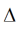

Geometry Dependence
Unless otherwise noted, all r3 model quantities scale with the multiplicity parameter m as defined in the Verilog-A Language Reference Manual (LRM), version 2.4.
The r3 model includes several mechanisms for deviations of the effective electrical length and width of a resistor from the drawn (design, or mask) values. The drawn length and width of the resistor, in units of microns, are
Because subcircuit models for resistors can consist of multiple resistance sections connected in series, it is desirable to be able to switch on and off the “end corrections” for length to facilitate implementation of such multi-section models. This is the function of the c1 and c2 instance parameters of the r3 model. The effective length offset is
(which is zero if neither end is contacted, xl+xlw/w_um if both ends are contacted, and one half of the latter if only one end is contacted). The effective electrical length, in microns, is
For flexibility of separately fitting low bias resistance and velocity saturation, an additional offset dxlsat is added to leff _ um for calculation of the electric field used in the velocity saturation model.
The effective width offset includes the physical effect models derived in [4]. These comprise a fixed offset for mask bias, lithography, and etching effects, and geometry dependent offsets for LOCOS, the webbing effect, and the finite dopant source effect. The effective electrical width, in microns, is
where the width of the dogbone, for the webbing effect model, in units of microns, is
The depletion factor depends on geometry as
where the width W and length L are effective geometries if sw_geo=1 and design geometries otherwise (in units of micron).
The depletion potential depends on geometry in version 1.1.0 as
The zero-bias resistance, which factors in the zero-bias depletion pinching, is then
Although end effects, such as spreading resistance and contact resistance, are assumed to be modeled via the xl parameter, the temperature coefficients of the end effects may differ from those of the body of the resistor. Simple analysis shows that these different temperature coefficients can be accounted for by introducing inverse length dependence to the temperature coefficients. A width dependence of temperature coefficients of resistance is also included in the model, and version 1.1.0 also includes an area dependence. Therefore, in r3_cmc ->r3
where the length dependence is switched on, off, or halved, depending on whether the resistor is contacted at both ends, not contacted, or contacted at only one end, respectively. The dependence of the temperature coefficients on whether a resistor is contacted or not enables consistent modeling of temperature coefficients for single or multiple section models.
The thermal conductance and capacitance include area, perimeter, contact, and fixed components. Asymptotically for a large area device, the heat flow is perpendicular to the plane of heat generation in the resistor, and the heat energy stored in a device depends on its volume, hence the area dependent component. For a long resistor, as it becomes narrower more of the heat flow is conducted by a “fringe” path at the edges of the device, hence the perimeter dependent component. As both length and width decrease, the thermal conditions in the device asymptotically approach that of a point source in an infinite medium, hence the fixed component. Contacts conduct heat flow, hence the contact component. The thermal conductance and capacitance are therefore
the area and perimeter are calculated as
The calculated perimeter therefore depends on whether the ends are contacted or not. Often, the design dimensions of the body of a resistor differ from the overall dimensions of the device, for example if the design length is considered to be the unsalicided length of a poly resistor, the total resistor length will typically include silicided contact regions. So it is not readily apparent what dimension should be used in calculation of the thermal conductance and capacitance. That is why the design dimensions, rather than some effective dimensions (whose value is calculated to best fit DC electrical data), are used. This turns out to be reasonable (with the exception that differences between the perimeter components along length and width dimensions are ignored), because if there is some difference  between design and effective dimensions for thermal conductance modeling, then for a device contacted at both ends
therefore any difference between design and effective dimensions can be taken into account by appropriate characterization of the fixed, perimeter, and area component parameters.
Because the local thermal conductance differs between the edge of a device and the center of a device, it is higher at the edge because of fringing conductance, the temperature of a resistor undergoing self-heating is not spatially uniform, but is lower at the edges than in the middle. This is not taken into account in the r3 model.
The end resistances are calculated from the resistance per contact and the number of contacts (parallel to the width dimension; adding contacts parallel to the length dimension, which can be done for reliability purposes, does not alter the resistance much – unless the contact adjacent to the resistor body fails)
The velocity saturation model includes geometry dependence in the bias dependent portion of the model evaluation, as it is formulated in terms of the electric fieldE=V21/(leff_um+dxlsat).
The areas and perimeters of the end region partitions, used in parasitic calculations, are in units of microns
If the number of contacts is not known, it can be calculated (see Figure 41-2). Let the contact width (in the direction parallel to the resistor width) be wc, the minimum spacing from a contact to the edge of the region it is in at the contact head of the resistor be wc2e, and the (minimum) spacing between contacts be wc2c. If (as in some older technologies) contacts can be scaled, then rc should be set to be the resistance of a minimum width contact and
and for technologies where the contact width is fixed (assuming the maximum possible number of contacts are places)
Return to top